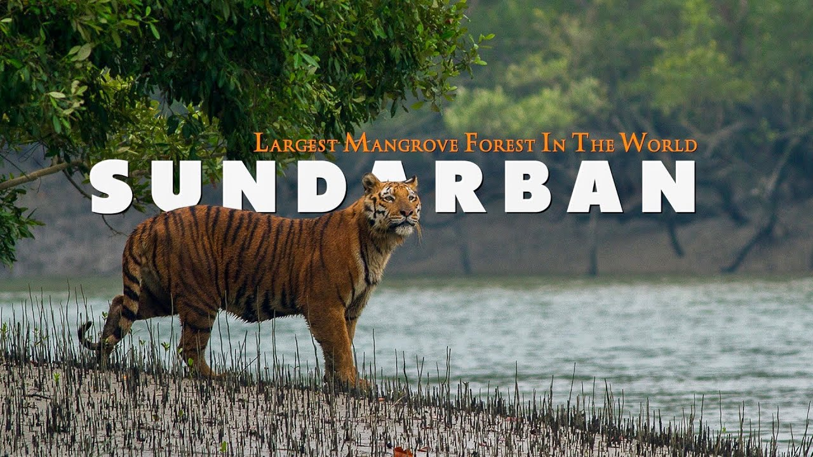
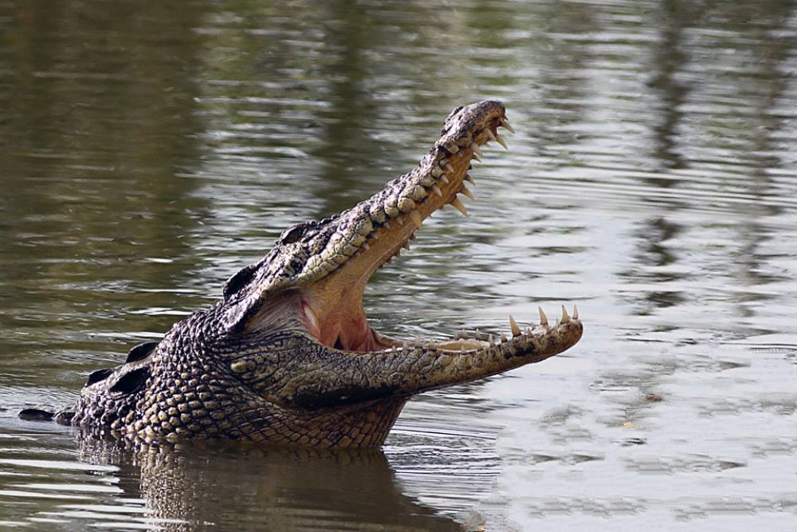
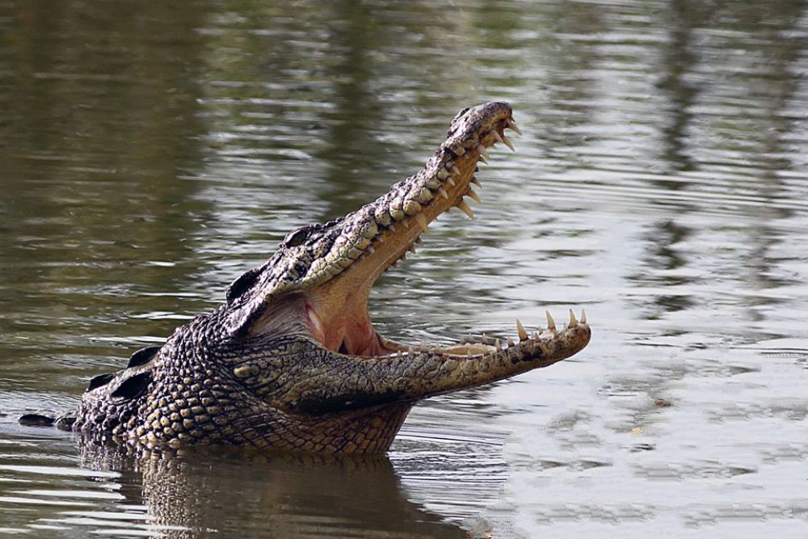
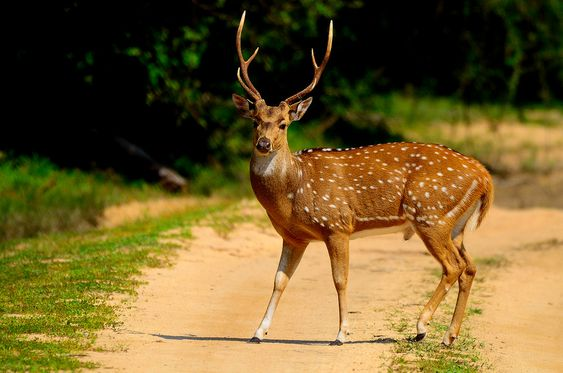
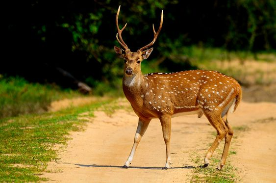

About Sundarban
Sundarban, a UNESCO World Heritage Site, is a breathtaking mangrove forest located in India and Bangladesh. It is known for its rich biodiversity, including the majestic Royal Bengal Tiger, spotted deer, crocodiles, and a wide variety of birds.
The name Sundarban means "beautiful forest," and it lives up to its name with stunning landscapes and serene waterways.
Wildlife to Watch For:
- Royal Bengal Tiger - The apex predator of this ecosystem.
- Saltwater Crocodile - Found basking along riverbanks.
- Spotted Deer - Often seen grazing near forest edges.
- Exotic Birds - Including kingfishers, herons, and eagles.
- Ganges River Dolphins - A rare sight in Sundarban's waters.

The majestic Royal Bengal Tiger in its natural habitat.
 

 

Location
Activities:
- Boat Safaris - Traverse the mangrove waterways for an unforgettable experience.
- Village Visits - Discover local culture and traditions.
- Photography - Capture the diverse flora and fauna.
- Bird Watching - Spot rare and migratory birds.
- Night Tours - Experience the forest's unique nocturnal life.
Explore the waterways by boat, visit local villages, and enjoy the tranquil beauty of this natural wonder.
Back to Home